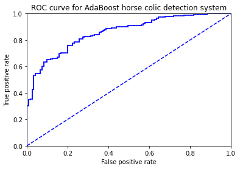

没有老话了，这是基础算法的最后一章，也是分类算法的最后一个算法了。
我们在做重要决定时，要吸取多个专家意见。机器学习处理问题也一样，这就是元算法背后的思路。现在最流行的元算法AdaBoost。
组合前面五种不同分类方法，将不同的分类器组合，这个组合结果称为集成方法或者元算法。
使用集成方法时会有多种形式：可以是不同算法的集成，也可以是同一算法集成。
优点： 泛化错误率低，易编码，可以应用在大部分分类器上，无参数调整。
缺点：对离群点敏感。
使用数据类型：数值型与标称型数据。
自举汇聚法，bagging，从原始样品集合随机选样品组成新样品集，然后每个样品集合构建一个选择器。
这样我们得到s个选择器，然后我们待测样品时，每个选择器都选择一下，然后投票决定。
Boosting 是通过集中关注被已有分类器错分的那些数据来获得新的分类器。
Boosting中的分类器权重并不相同，这是与bagging的最大区别，每个权重代表的是其对应分类器在上一轮迭代中的成功度。
Boosting方法拥有多个版本，这里只关注最流行的版本AdaBoost。
引用之前逻辑回归用到的马的数据，之前计算错误率挺高的不是？当然我们在此之前搞一些小的数据集玩玩，模拟测试一下。
from numpy import *
def loadSimpData():
datMat = matrix([[ 1. , 2.1],
[ 2. , 1.1],
[ 1.3, 1. ],
[ 1. , 1. ],
[ 2. , 1. ]])
classLabels = [1.0, 1.0, -1.0, -1.0, 1.0]
return datMat,classLabels
def loadDataSet(fileName): #general function to parse tab -delimited floats
numFeat = len(open(fileName).readline().split('\t')) #get number of fields
dataMat = []; labelMat = []
fr = open(fileName)
for line in fr.readlines():
lineArr =[]
curLine = line.strip().split('\t')
for i in range(numFeat-1):
lineArr.append(float(curLine[i]))
dataMat.append(lineArr)
labelMat.append(float(curLine[-1]))
return dataMat,labelMat
datMat, classLabels = loadSimpData()
datMat, classLabels
(matrix([[1. , 2.1],
[2. , 1.1],
[1.3, 1. ],
[1. , 1. ],
[2. , 1. ]]),
[1.0, 1.0, -1.0, -1.0, 1.0])
两个特征值和取+1或者-1的label标签
训练数据中的每个样本，并赋予其一个权重，这些权重构成了向量D。一开始，这些权重都初始化成相等值。
首先在训练数据上训练出一个弱分类器并计算该分类器的错误率，
然后在同一数据集上再次训练弱分类器。在第二次训练当中，将会重新调整每个样品的权重，
其中第一次分对的样品的权重会降低，分错的样品的权重会增高。
为了从所有弱分类器中得到最终结果，每个分类器配一个alpha值,
α = (1/2) * ln(正确分类样品数/错误分类样品数)
其实我觉得这个方法的核心就是把错误分类的样品权重比重调大，更重视错误样品。这样分类器就会向他矫正。
# 依照单特征决策树来分类，输入值为，数据集 + 特征向量 + 阈值 + 判断法则 。 输出为 预测数列 。
def stumpClassify(dataMatrix,dimen,threshVal,threshIneq):#just classify the data
retArray = ones((shape(dataMatrix)[0],1))
if threshIneq == 'lt':
retArray[dataMatrix[:,dimen] <= threshVal] = -1.0
else:
retArray[dataMatrix[:,dimen] > threshVal] = -1.0
return retArray
# 建立单特征决策树 输入数据集 + 分类答案 + 每个样品的权重集合 输出 字典形式的单特征决策树 + 对应的误差值 + 对应的预测标签数列
# 原理就是，遍历特征向量，对于每一个特征向量设置一个合适的步长，一个一个步长来划分阈值，用上面那个分类函数计算出推测结果，然后对比label得出
哪个推测错了，再结合权重得出weightedError，遍历完全，找到最小的weightedError，对应的树就是我们要找的树。
def buildStump(dataArr,classLabels,D):
dataMatrix = mat(dataArr); labelMat = mat(classLabels).T
m,n = shape(dataMatrix)
numSteps = 10.0; bestStump = {}; bestClasEst = mat(zeros((m,1)))
minError = inf #init error sum, to +infinity
for i in range(n):#loop over all dimensions
rangeMin = dataMatrix[:,i].min(); rangeMax = dataMatrix[:,i].max();
stepSize = (rangeMax-rangeMin)/numSteps
for j in range(-1,int(numSteps)+1):#loop over all range in current dimension
for inequal in ['lt', 'gt']: #go over less than and greater than
threshVal = (rangeMin + float(j) * stepSize)
predictedVals = stumpClassify(dataMatrix,i,threshVal,inequal)#call stump classify with i, j, lessThan
errArr = mat(ones((m,1)))
errArr[predictedVals == labelMat] = 0
weightedError = D.T*errArr #calc total error multiplied by D
# print ("split: dim %d, thresh %.2f, thresh ineqal: %s, the weighted error is %.3f" % (i, threshVal, inequal, weightedError))
if weightedError < minError:
minError = weightedError
bestClasEst = predictedVals.copy()
bestStump['dim'] = i
bestStump['thresh'] = threshVal
bestStump['ineq'] = inequal
return bestStump,minError,bestClasEst
D = mat(ones((5, 1))/5)
buildStump(datMat, classLabels, D)
({'dim': 0, 'thresh': 1.3, 'ineq': 'lt'},
matrix([[0.2]]),
array([[-1.],
[ 1.],
[-1.],
[-1.],
[ 1.]]))
#这就是一个的迭代过程，求出最佳决策树后，修改好样品权值D，并且计算决策树的权重alpha，
根据新的D求最佳决策树，再求新的D，如此迭代，直到通过该决策森林使得错误值为0
def adaBoostTrainDS(dataArr,classLabels,numIt=40):
weakClassArr = []
m = shape(dataArr)[0]
D = mat(ones((m,1))/m) #init D to all equal
aggClassEst = mat(zeros((m,1)))
for i in range(numIt):
bestStump,error,classEst = buildStump(dataArr,classLabels,D)#build Stump
print ("D:",D.T)
alpha = float(0.5*log((1.0-error)/max(error,1e-16)))#calc alpha, throw in max(error,eps) to account for error=0
bestStump['alpha'] = alpha
weakClassArr.append(bestStump) #store Stump Params in Array
print ("classEst: ",classEst.T)
expon = multiply(-1*alpha*mat(classLabels).T,classEst) #exponent for D calc, getting messy
D = multiply(D,exp(expon)) #Calc New D for next iteration
D = D/D.sum()
#calc training error of all classifiers, if this is 0 quit for loop early (use break)
aggClassEst += alpha*classEst
print ("aggClassEst: ",aggClassEst.T)
aggErrors = multiply(sign(aggClassEst) != mat(classLabels).T,ones((m,1)))
errorRate = aggErrors.sum()/m
print ("total error: ",errorRate)
if errorRate == 0.0: break
return weakClassArr,aggClassEst
接下来，我们来运行一下，看看效果~,
adaBoostTrainDS(datMat, classLabels, 9)
output:
D: [[0.2 0.2 0.2 0.2 0.2]]
classEst: [[-1. 1. -1. -1. 1.]]
aggClassEst: [[-0.69314718 0.69314718 -0.69314718 -0.69314718 0.69314718]]
total error: 0.2
D: [[0.5 0.125 0.125 0.125 0.125]]
classEst: [[ 1. 1. -1. -1. -1.]]
aggClassEst: [[ 0.27980789 1.66610226 -1.66610226 -1.66610226 -0.27980789]]
total error: 0.2
D: [[0.28571429 0.07142857 0.07142857 0.07142857 0.5 ]]
classEst: [[1. 1. 1. 1. 1.]]
aggClassEst: [[ 1.17568763 2.56198199 -0.77022252 -0.77022252 0.61607184]]
total error: 0.0
([{'dim': 0, 'thresh': 1.3, 'ineq': 'lt', 'alpha': 0.6931471805599453},
{'dim': 1, 'thresh': 1.0, 'ineq': 'lt', 'alpha': 0.9729550745276565},
{'dim': 0, 'thresh': 0.9, 'ineq': 'lt', 'alpha': 0.8958797346140273}],
matrix([[ 1.17568763],
[ 2.56198199],
[-0.77022252],
[-0.77022252],
[ 0.61607184]]))
我们可以清晰的认识到，一开始权重是平均的，正确标签为[1.0, 1.0, -1.0, -1.0, 1.0] 但是第一个数判断错了，第二次生成树之前，我们发现第一个样品的权重变大了。但是最后的一个样品判断错了。 在修改权重，最后生成第三棵树，错误数为0.
下面是使用这个森林对样品进行分类
def adaClassify(datToClass,classifierArr):
dataMatrix = mat(datToClass)#do stuff similar to last aggClassEst in adaBoostTrainDS
m = shape(dataMatrix)[0]
aggClassEst = mat(zeros((m,1)))
for i in range(len(classifierArr)):
classEst = stumpClassify(dataMatrix,classifierArr[i]['dim'],\
classifierArr[i]['thresh'],\
classifierArr[i]['ineq'])#call stump classify
aggClassEst += classifierArr[i]['alpha']*classEst
# print (aggClassEst)
return sign(aggClassEst)
adaClassify(datMat[2],weakClass) == classLabels[2]
matrix([[ True]])
用到的是患有疝气的马各项指标和对应马存活状态的数据。
datArr, labelArr = loadDataSet('horseColicTraining2.txt')
classifierArray, aggClassEst = adaBoostTrainDS(datArr, labelArr, 10)
output:
total error: 0.2842809364548495
total error: 0.2842809364548495
total error: 0.24749163879598662
total error: 0.24749163879598662
total error: 0.25418060200668896
total error: 0.2408026755852843
total error: 0.2408026755852843
total error: 0.22073578595317725
total error: 0.24749163879598662
total error: 0.23076923076923078
testArr, testLabelArr = loadDataSet('horseColicTest2.txt')
prediction10 = adaClassify(testArr, classifierArray)
errArr = mat(ones((shape(testArr)[0], 1)))
errArr[prediction10 == mat(testLabelArr).T] = 0
err_rate = errArr.sum()/shape(testArr)[0]
err_rate
output:
0.23880597014925373
# 错误率比之前低了很多~
错误率固然重要，但是衡量分类的指标可并不是只有错误率，还有正确率、召回率和ROC曲线，正确率就是判断完之后，在所有的推测为正确的样品里面真正正确的样品占比 召回率是在所有真正正确的样品里面推测为正确样品的占比，ROC曲线，就是以真阳率为纵坐标，假阳率为横坐标的图像，左上角为我们之向往。 y=x为随机判断。如何绘制ROC曲线？下面我们来试试。
# 把我们的预测标签拿出来，是原始的没有sigmoid处理的，我们在对其进行从小到大排列（当然你可以从大到小，但是后面要改一下代码）。
然后我们就得到了由小到大排列的预测label值，然后我们从图形右上角开始，对预测值进行检验，因为前面是最小值，如果
检验结果为1（即对应label为1），这就不对了，这就要降低其真阳率，所以要下降一个单位，如果是其他情况，假设为0，即应该是增加其假阴率，其实就是
减少假阳率，向左移动一个单位。有同学会问后面到正数怎么办还是这套规则吗？无妨，因为后面对曲线围成的面积已经影响不大了。
def plotROC(predStrengths, classLabels):
import matplotlib.pyplot as plt
cur = (1.0,1.0) #cursor
ySum = 0.0 #variable to calculate AUC
numPosClas = sum(array(classLabels)==1.0)
yStep = 1/float(numPosClas); xStep = 1/float(len(classLabels)-numPosClas)
sortedIndicies = predStrengths.argsort()#get sorted index, it's reverse
fig = plt.figure()
fig.clf()
ax = plt.subplot(111)
#loop through all the values, drawing a line segment at each point
for index in sortedIndicies.tolist()[0]:
if classLabels[index] == 1.0:
delX = 0; delY = yStep;
else:
delX = xStep; delY = 0;
ySum += cur[1]
#draw line from cur to (cur[0]-delX,cur[1]-delY)
ax.plot([cur[0],cur[0]-delX],[cur[1],cur[1]-delY], c='b')
cur = (cur[0]-delX,cur[1]-delY)
ax.plot([0,1],[0,1],'b--')
plt.xlabel('False positive rate'); plt.ylabel('True positive rate')
plt.title('ROC curve for AdaBoost horse colic detection system')
ax.axis([0,1,0,1])
plt.show()
print ("the Area Under the Curve is: ",ySum*xStep)
datArr, labelArr = loadDataSet('horseColicTraining2.txt')
classifierArray, aggClassEst = adaBoostTrainDS(datArr, labelArr, 10)
plotROC(aggClassEst.T, labelArr)
output:
到这里，基础部分就已经全部结束了，感谢大家的陪伴，可能有些讲得不是很准确的地方，望海涵，未来有一些新的想法也会实时更新的。 接下来让我们进入深度学习领域吧~
例子来自：Machine Learning in Action，若侵犯版权，请联系我删除，谢谢。